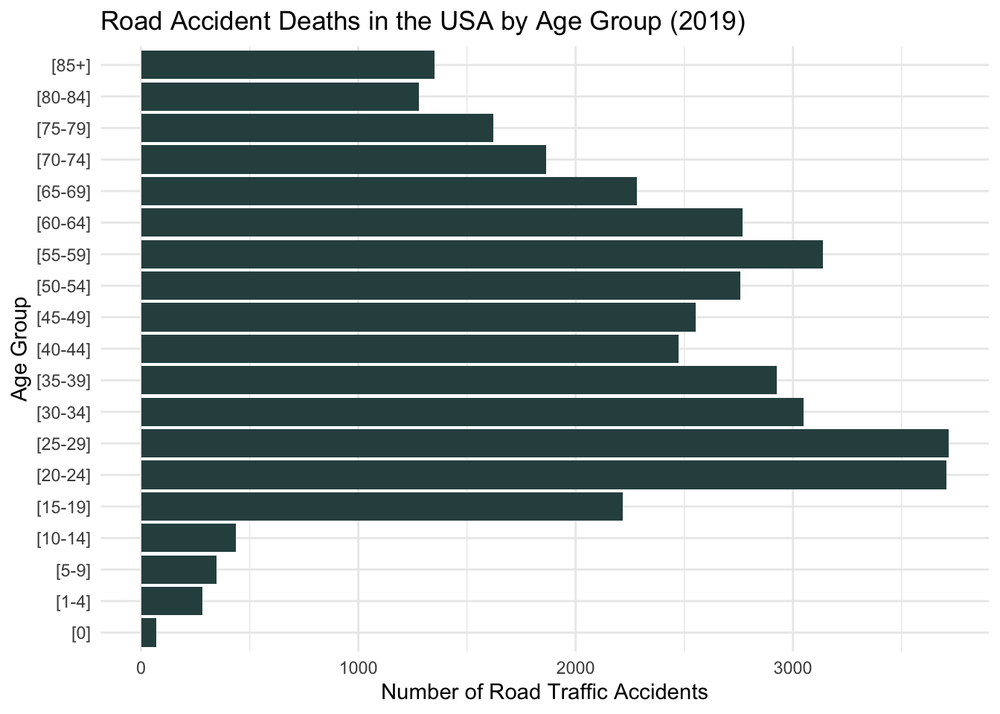

# Load necessary libraries if not already loadedlibrary(dplyr)
Attaching package: 'dplyr'
The following objects are masked from 'package:stats':
filter, lag
The following objects are masked from 'package:base':
intersect, setdiff, setequal, union
library(ggplot2)#load datasetroaddeaths <-read.csv("Road traffic accidents.csv")# Filter the dataset for the year 2021year_2019_data <-subset(roaddeaths, Year ==2019)# Calculate the total deaths for all ages and both sexes in 2019total_deaths_2019 <- year_2019_data %>%filter(Sex =="All"& Age.Group =="[All]")# Specify the number of top countries you want (e.g., top 5)T <-5# Get the top T countries with the highest road accidents in 2019top_5_countries <- total_deaths_2019 %>%top_n(T, Number)#Some calculations for plotingtop_5_countries$wc <-cumsum(top_5_countries$Death.rate.per.100.000.population)top_5_countries$sp <-top_5_countries$wc - top_5_countries$Death.rate.per.100.000.populationtop_5_countries$mp <-with(top_5_countries,sp +(wc-sp)/2)# plottingcustom_colors <-c("Brazil"="firebrick", "Mexico"="navy", "Russian Federation"="seagreen", "Thailand"="chocolate", "United States of America"="orchid")ggplot(top_5_countries, aes(ymin=0)) +geom_rect((aes(xmin = sp, xmax = wc, ymax = Number, fill = Country))) +geom_text(aes(x = mp, y = Number *0.5, label =c("Brazil", "Mexico", "Russia", "Thailand", "USA"))) +theme_bw() +theme(legend.position ="none") +labs(title ="Road Deaths and Death Rates for Countries with the Highest Mortality",x ="Death Rate (per 100,000 population)",y ="Number of Road Accident Deaths", ) +scale_fill_manual(values = custom_colors)
Embedded Charts
# Load necessary libraries if not already loadedlibrary(dplyr)library(ggplot2)library(reshape2)#load datasetroaddeaths <-read.csv("Road traffic accidents.csv")# Filter the dataset for the year 2019 $ 2020year_2019_2020_data <-subset(roaddeaths, Year ==2019| Year ==2020)# Calculate the total deaths for all ages and both sexes in 2019 $ 2020road_deaths_2019_2020 <- year_2019_2020_data %>%filter(Sex =="All"& Age.Group =="[All]")# Specify the number of top countriesT <-4# Get the top 4 countries with the highest road accident deathstop_countries<- road_deaths_2019_2020 %>%top_n(T,Number )# Define custom fill colorscustom_colors <-c("2019"="darkslategrey", "2020"="orchid")# Plotggplot(top_countries, aes(x = Country, y = Number, fill =as.factor(Year))) +geom_bar(position ="dodge", stat ="identity") +facet_grid(~ Country, scales ="free_y") +theme(axis.text.x =element_blank()) +labs(title ="Road Accident Deaths", x =NULL, y ="Number of Deaths") +scale_fill_manual(values = custom_colors)
Bar Chart
#Load the necessary librarieslibrary(ggplot2)library(dplyr)#load datasetroaddeaths <-read.csv("Road traffic accidents.csv")# Filter the dataset for the year 2019year_2019_data <-subset(roaddeaths, Year ==2019)# Filter the dataset for USAusa_2019 <-subset(year_2019_data, Country =="United States of America"& Age.Group !="[All]"& Age.Group !="[Unknown]")# Reorder the levels of Age.Groupusa_2019$Age.Group <-factor(usa_2019$Age.Group, levels =c("[0]", "[1-4]", "[5-9]", "[10-14]", "[15-19]","[20-24]", "[25-29]", "[30-34]", "[35-39]","[40-44]", "[45-49]", "[50-54]", "[55-59]", "[60-64]", "[65-69]", "[70-74]", "[75-79]", "[80-84]", "[85+]"))# Create the bar plotggplot(usa_2019, aes(x = Number)) +geom_bar(aes(y = Age.Group), position ="dodge", stat ="identity", fill ="darkslategrey") +labs(title ="Road Accident Deaths in the USA by Age Group (2019)",x ="Number of Road Traffic Accidents",y ="Age Group" ) +theme_minimal()

Column Chart
# Load the necessary librarieslibrary(ggplot2)#load datasetroaddeaths <-read.csv("Road traffic accidents.csv")# Filter the dataset for the year 2021year_2019_data <-subset(roaddeaths, Year ==2019)# Create a clustered bar chartggplot(year_2019_data, aes(x = Region)) +geom_col(aes(y = Number, fill = Sex), position ="dodge", stat ="identity") +scale_fill_manual(values =c("Male"="orchid", "Female"="chocolate", "All"="darkslategrey")) +labs(title ="Road Accident Deaths by Gender and Region (2019)",x =NULL,y ="Number of Road Traffic Accidents",fill ="Gender" ) +theme_minimal()+theme(axis.text.x =element_text(angle =45, hjust =1))
Warning in geom_col(aes(y = Number, fill = Sex), position = "dodge", stat =
"identity"): Ignoring unknown parameters: `stat`